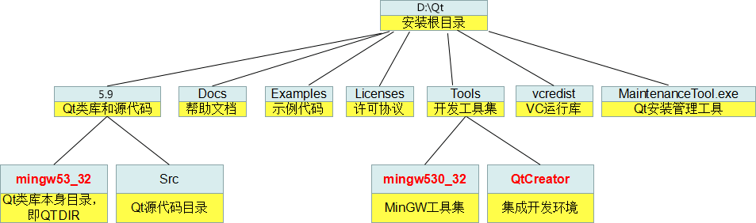
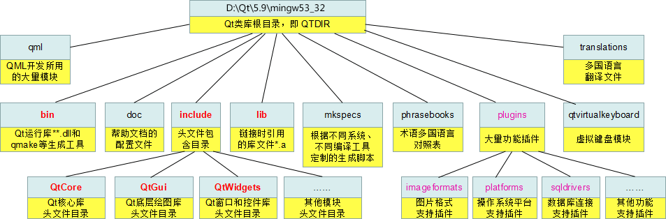

解密Qt安装目录的结构
了解 Qt 安装目录的结构虽然不是编程必须的，但是它能练就我们的内功，让我们对 Qt 的编程环境了如指掌。Windows 和 Linux 下 Qt 安装目录的结构非常相似，我们以 Windows 为例进行讲解，Linux 不再赘述。
为了方便描述，下文我们使用
注意，~\5.9\ 和 ~\Tools\ 目录下都有 mingw53_32 目录（图中我用红色标出来了），但是两者是有区别的：
QtCreator 是个例外，QtCreator 使用 MSVC2015 编译生成的，所以安装目录里有一个 vcredist 文件夹存储 VC 运行库安装文件。
最后的 MaintenanceTool.exe ，对于离线安装包，它只能用于删除软件包，如果 Qt 开发环境是用在线安装方式装的，这个工具还可以管理开发环境组件和升级组件。
Qt 类库的帮助文件位于 Docs 文件夹里，需要用 Qt Assistant 工具才能查看。
Examples 里是示例代码，可以用 QtCreator 集成开发环境打开各个示例。
图上列的比较有限，不一定全面，主要是教大家熟悉一下 Qt 的开发环境。
Qt 整体目录结构
不同版本 Qt 的安装目录结构大同小异，本节我们以 Qt 5.9.0 为例来说明，如下图所示。

图1：Qt 安装目录的结构
图1：Qt 安装目录的结构
为了方便描述，下文我们使用
~表示 Qt 的安装目录。注意，~\5.9\ 和 ~\Tools\ 目录下都有 mingw53_32 目录（图中我用红色标出来了），但是两者是有区别的：
- ~\5.9\mingw53_32\ 目录包含的是 Qt 的类库文件，例如头文件、静态库、动态库等，这些类库文件使用 MinGW 工具集编译而成。
- ~\Tools\mingw53_32\ 目录包含的是 MinGW 工具集，例如编译器 g++、链接器 ld、make 工具、打包工具 ar 等。
QtCreator 是个例外，QtCreator 使用 MSVC2015 编译生成的，所以安装目录里有一个 vcredist 文件夹存储 VC 运行库安装文件。
最后的 MaintenanceTool.exe ，对于离线安装包，它只能用于删除软件包，如果 Qt 开发环境是用在线安装方式装的，这个工具还可以管理开发环境组件和升级组件。
Qt 类库的帮助文件位于 Docs 文件夹里，需要用 Qt Assistant 工具才能查看。
Examples 里是示例代码，可以用 QtCreator 集成开发环境打开各个示例。
Qt 类库目录
下面我们再探究一下 Qt 类库目录（~\5.9\mingw53_32\）的结构，如下图所示。

图2：Qt 类库目录
图2：Qt 类库目录
图上列的比较有限，不一定全面，主要是教大家熟悉一下 Qt 的开发环境。
关注公众号「站长严长生」，在手机上阅读所有教程，随时随地都能学习。内含一款搜索神器，免费下载全网书籍和视频。

微信扫码关注公众号